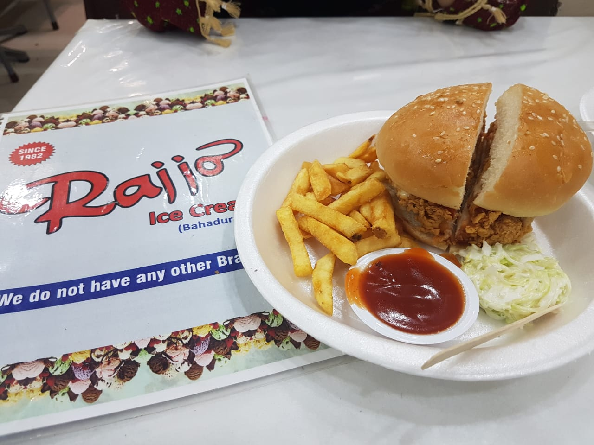

ABOUT RAJJO FASTFOOD
Established in 1982, RAJJO FASTFOOD has been serving the finest and most delicious fast food for
over four decades. Our mission is to deliver the best quality food, made from the freshest ingredients, to our
valued customers. We take pride in offering a wide variety of mouthwatering dishes that keep people coming back
for more.
From classic burgers and fries to unique local flavors, every item on our menu is crafted with care and passion.
We believe that great food brings people together, and we strive to create an atmosphere where families,
friends, and food lovers can enjoy a memorable dining experience.
Come and taste the difference that dedication, quality, and tradition bring to every meal at
RAJJOFASTFOOD.

- Our Mission:
- At RAJJO FASTFOOD, our mission is to provide delicious, high-quality food quickly, while creating an
inviting atmosphere for our customers. We believe in delivering exceptional service and creating meals that
bring joy to every bite.
- Meet the Team:
- Our head chef, MUHAMMAD SHAFIQ, has been crafting delicious fast food recipes for over 50 years. With a passion
for innovation and a respect for tradition, He ensures that every dish is made with love and perfection.
- Our Signature Dishes:
- At RAJJO FASTFOOD, we are known for our signature Rajjo Special Burger and crispy French fries. These, along with our other signature dishes, have been customer favorites for decades.


- Community Engagement:
- We are proud to be part of the local community. Over the years, RAJJO FASTFOOD has supported various
community events and charity initiatives, helping to give back to the neighborhood that has supported us for
so long.
<
- What Our Customers Say:
- "RAJJO FASTFOOD is our go-to spot for family dinners. The food is always fresh, and the service is amazing!"
- A happy customer
<
- Awards & Recognitions:
- We are honored to have received multiple awards for our delicious food and excellent service, including the
"Best Fast Food Restaurant" award in 2020.
Top
About RAJJO Fast Food
ABOUT RAJJO FASTFOOD
Established in 1982, RAJJO FASTFOOD has been serving the finest and most delicious fast food for over four decades.
Our mission is to deliver the best quality food, made from the freshest ingredients, to our valued customers. We take pride
in offering a wide variety of mouthwatering dishes that keep people coming back for more.
From classic burgers and fries to unique local flavors, every item on our menu is crafted with care and passion. We believe that
great food brings people together, and we strive to create an atmosphere where families, friends, and food lovers can enjoy
a memorable dining experience.
Come and taste the difference that dedication, quality, and tradition bring to every meal at RAJJO FASTFOOD.
- Our Mission:
- At RAJJO FASTFOOD, our mission is to provide delicious, high-quality food quickly, while creating an inviting atmosphere for
our customers. We believe in delivering exceptional service and creating meals that bring joy to every bite.
- Meet the Team:
- Our head chef, MUHAMMAD SHAFIQ, has been crafting delicious fast food recipes for over 50 years. With a passion for innovation
and a respect for tradition, he ensures that every dish is made with love and perfection.
- Our Signature Dishes:
- At RAJJO FASTFOOD, we are known for our signature Rajjo Special Burger and crispy French fries. These, along with our other
signature dishes, have been customer favorites for decades.
- Community Engagement:
- We are proud to be part of the local community. Over the years, RAJJO FASTFOOD has supported various community events and charity
initiatives, helping to give back to the neighborhood that has supported us for so long.
- What Our Customers Say:
- "RAJJO FASTFOOD is our go-to spot for family dinners. The food is always fresh, and the service is amazing!" - A happy customer
- Awards & Recognitions:
- We are honored to have received multiple awards for our delicious food and excellent service, including the "Best Fast Food
Restaurant" award in 2020.
Top
Enhancements:
Consistent Color Scheme: Black background with white and yellow text for titles, matching the first page.
Border-radius for images: Adds rounded corners to the images for a softer look.
Improved navigation styling: The navigation bar looks similar to your first page.
Hover effect for links: Links will be underlined when